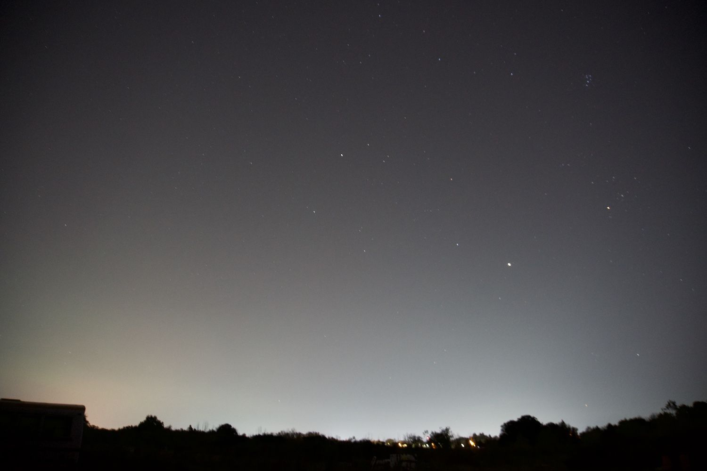

This audio visualizer was made as a project for my IGME-330: Rich Media Web Development
class with Professor John-Paul Takats in Fall 2024. It includes three songs and three test sounds.
It was meant to look like the night sky, which I think is pretty.

The program uses the Web Audio API to play the songs and analyze the sound data streaming
in, and renders a visualization to go along with the song using the Canvas API. I originally programmed
it in JavaScript, then ported it to TypeScript. The code is transpiled back into JavaScript with Babel
and packaged using Webpack.
Controls:
Play/Pause: Starts or stops the selected
song.
Full Screen: Puts the visualizer into
fullscreen.
Track: Changes the song/sound to be
played.
Volume: Adjusts the song/sound's playback
volume.
Show Gradient: Toggles whether the
environment gradient is shown.
Show Bars: Toggles whether the bars
representing sound info are shown.
Show Stars: Toggles whether the orbiting
stars are shown.
Show Noise: Toggles whether visual noise
should be overlaid on the visualizer
Show Invert: Toggles whether the
visualizer should be color-inverted.
Frequency/Waveform: Toggles whether the
bars display the song/sound's frequency range at the current time or a representation of its
waveform.
Horizon Height: Adjusts how high the
visual horizon is on the screen.
Star Radius: Adjusts how wide the stars'
orbits are.
Bass Cutoff: Applies a high-pass filter,
lowering the volume of frequencies below the desired threshold.
Treble Cutoff: Applies a low-pass filter,
lowering the volume of frequencies above the desired threshold.